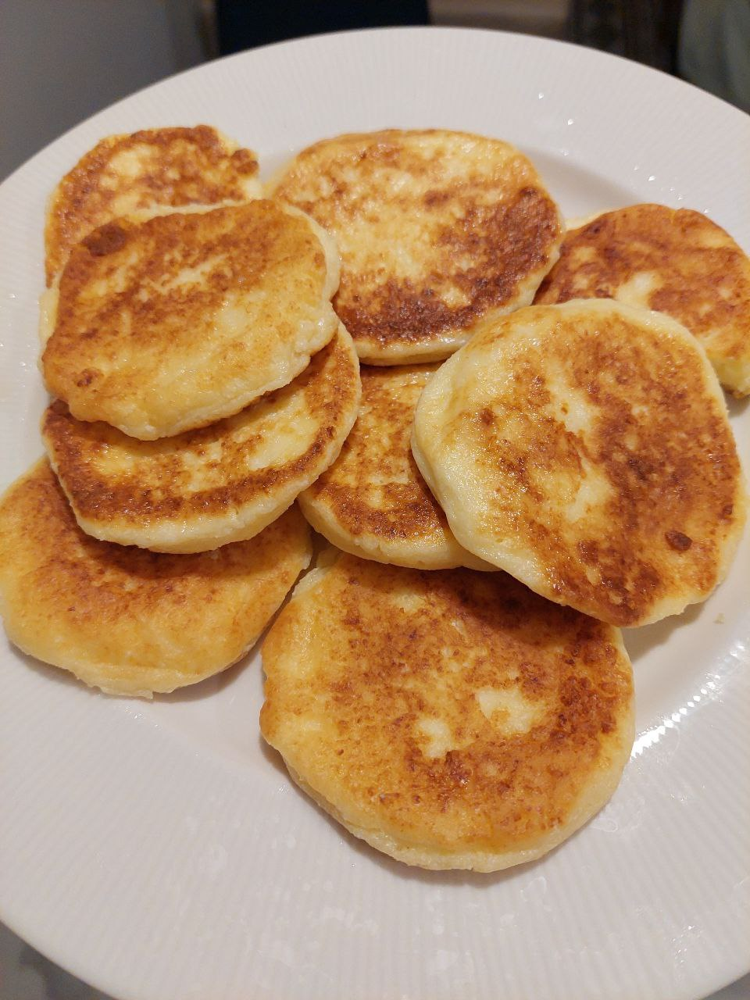

Syrniki

Description
Ingredients
- 500g farmer's cheese or cottage cheese (you may try to use riccotta as well)
- 2 large eggs
- 3-4 tablespoons all-purpose flour
- 2-3 tablespoons granulated sugar (adjust to taste)
- 1 teaspoon vanilla extract (optional)
- Pinch of salt
- Vegetable oil or butter for frying
- Optional toppings: sour cream, jam, honey, fresh berries
Steps
- Mix Ingredients: Combine farmer's cheese, eggs, flour, sugar, vanilla, and salt in a bowl until a thick dough forms.
- Shape Pancakes: Form small pancakes from the dough mixture.
- Fry: Heat oil in a skillet and fry pancakes until golden brown on both sides, about 3-4 minutes per side.
- Serve: Serve warm with optional toppings like sour cream, jam, or honey.